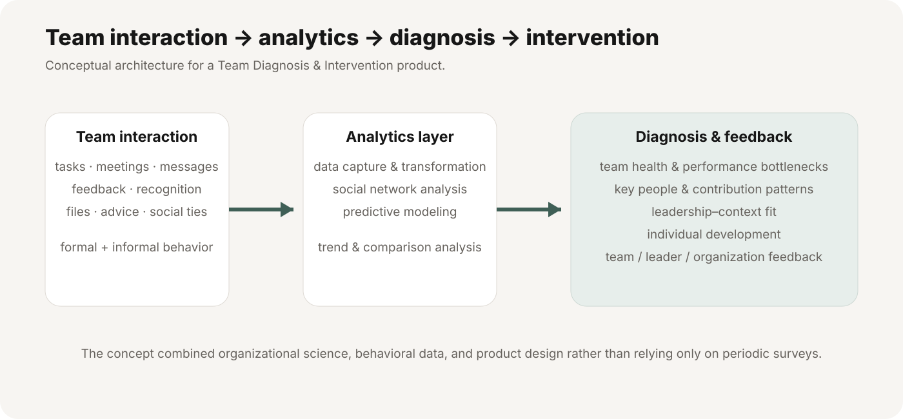
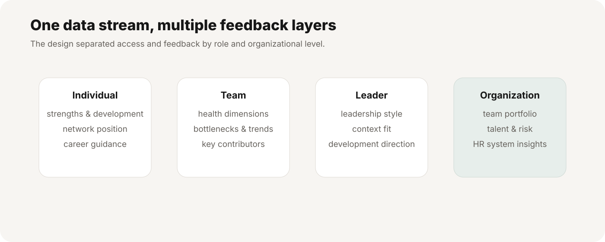

Team Diagnosis & Intervention — Turning Collaboration Data into Team Feedback
A product concept for capturing everyday team interaction, analyzing collaboration structure, and translating behavioral data into diagnostic feedback for employees, teams, leaders, and organizations.
Product premise
The concept starts from the idea that team effectiveness depends heavily on how members interact — not only through formal work such as task assignment and meetings, but also through communication, advice, recognition, information sharing, and social ties. The proposed system captures those interactions and converts them into evidence for diagnosis and intervention.

Front-end interaction layer
- Team and subgroup communication
- Tasks, goals, meetings, files, messages, and notifications
- Recognition and feedback behaviors
- Search and filtering by person, topic, task, date, and interaction type
- Role- and privacy-aware access to different interaction spaces
Back-end analytics layer
- Capture and transform behavioral interaction data
- Construct social-network measures
- Compare high- and low-performing teams
- Identify key members, bottlenecks, and trends
- Use predictive analytics to support diagnosis
Feedback was intentionally multi-level
The design separated feedback by role: individual development, team health, leadership-context fit, and organization-level workforce insights. It also anticipated permission controls because not every diagnostic result should be visible to every user.

Examples of diagnostic concepts
- Team health dashboards and radar-style comparisons
- Performance bottleneck and improvement-potential analysis
- Key employee / contribution analysis
- Leadership style and leadership–situation fit
- Individual network position and career-development feedback
My contribution
I helped translate organizational behavior and social-network theory into a product architecture: deciding what behavioral signals could be captured, how interaction data could be structured for analysis, and how the resulting insights could be returned to different users in an understandable form.
Important framing
This was a product and research concept, not a deployed production system. I describe it as product design and analytical architecture rather than as a live enterprise platform.
Why it still feels current
The underlying problem is now even more relevant: organizations increasingly have digital traces of collaboration, but the value comes from turning those traces into interpretable, privacy-aware measures of team dynamics rather than simply collecting more activity data.